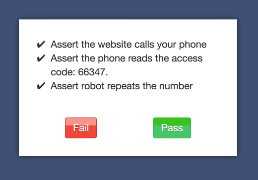

Imagine you're testing a system that calls your user with an access code. How do you assert such a thing? You can use the assertManual method, which will display a manual assertion to be affirmed by the test observer by clicking either pass or fail. The code for this is incredibly simple:
/**
* @interactive
*/
public function testPhoneReceivedAccessCode() {
$this->assertManual("Assert the website calls your phone with the access code: 66347.");
}
When this method is called here's what the test observer will see in their browser, for the test to continue they will have to click one of the two buttons.

Multiple Assertions
If you want you may have more than one assertion by sending an array instead:
/**
* @interactive
*/
public function testPhoneReceivedAccessCode2() {
$this->assertManual([
'Assert the website calls your phone',
'Assert the phone reads the access code: 66347.',
'Assert robot repeats the number',
]);
}

Adding Instructions
You could rewrite the above code with some instructions to the user like the following. Take note that markdown is supported for the arguments passed to ::assertManual. This is very much related to manual tests, in fact it's a hybridization of end to end and manual tests.
/**
* @interactive
*/
public function testPhoneReceivedAccessCode() {
$this->assertManual("Assert the website calls your phone with the access code: 66347.", [
"Turn on your phone.",
"When it rings, answer it.",
"Write down the access code you hear.",
]);
}
And it will render like so.
Test Configuration
- Mark these classes or methods with
@interactive - To run these tests, the environment variable
TEST_INTERACTIVE=1must be set.